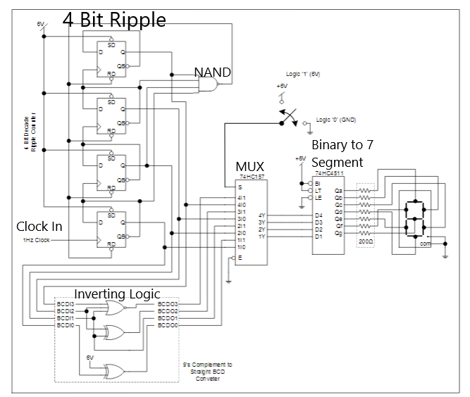
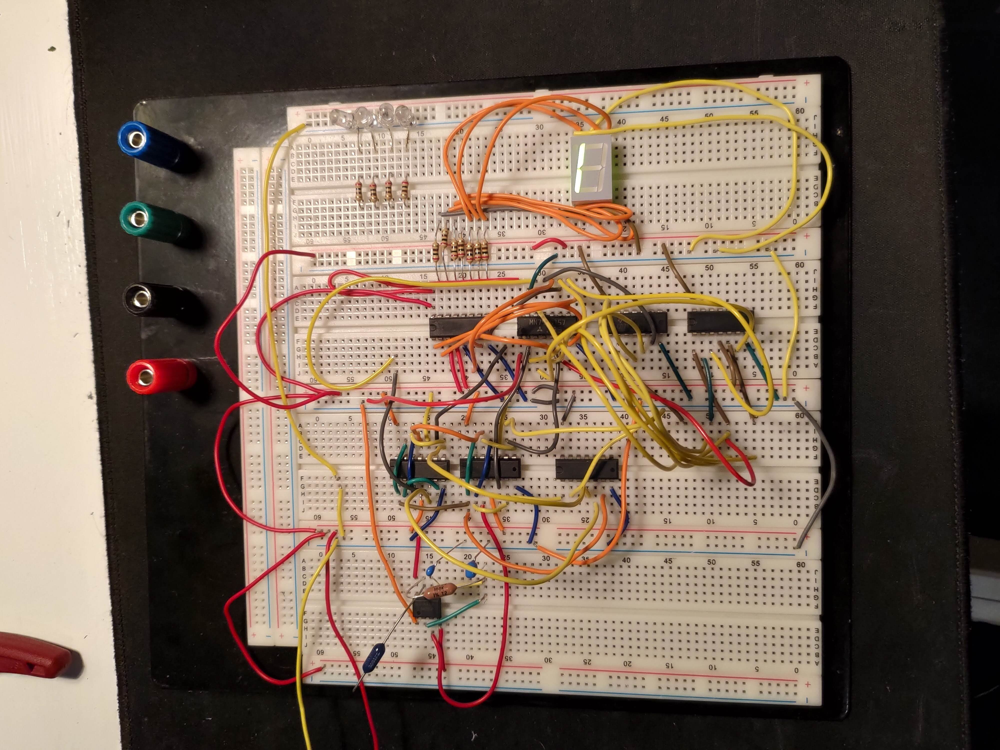

I have experience working with the Arduino microcontroller. My favorite project pertaining to this is an app that allowed me to remotely turn on and off christmas lights. To do this I wired a relay and bluetooth controller to an Arduino and created a basic android app to communicate with the setup.
I overcame many challenges and learned throughout this process, especially in regard to getting the bluetooth controller and my app to properly communicate. I did this by referencing both bluetooth projects created by other makers, and reading the specification sheets for the controller. Armed with more information I was able to configure the ports properly and solve the largest Christmas crisis of our century, having to get up to turn on and off Christmas lights each day.
Shown above is a 4 bit decade counter constructed on a breadboard. Designed and implemented using digital logic, the circuit starts with a 5v input signal into a 555 timer, highlighted in the image below, and a series of capacitors to charge and discharge at a rate of 1 tick per second (1Hz). Using this signal, the circuit is able to count up or down from 0 to 9. For a more detailed explanation of how the circuit works click here
 
P5.js is an open source platform for interactive, graphical experiences. Essentially, it is a library that allows you to draw shapes to a window and easily process user input. I have used this library to code a version of Space Invaders!
For this project I took an object oriented approach. This involved setting up classes for the aliens and ships. I took a bottom-up approach, coding each of the base classes, then adding features and game logic. Aptly titled Not Space Invaders, the final product came out as follows.
Use the Arrow Keys to move left and right, spacebar to shoot.
Shoot all the ships to win! If you get overwhelmed by alien circles you will lose.